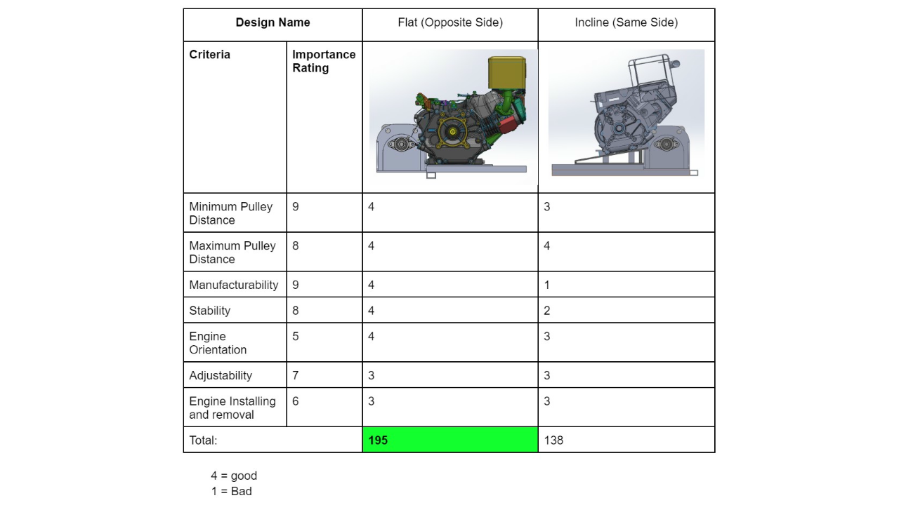
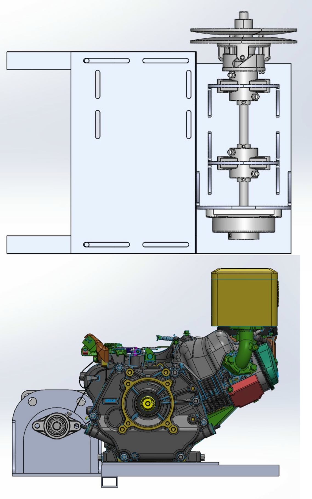
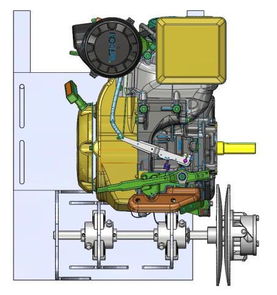
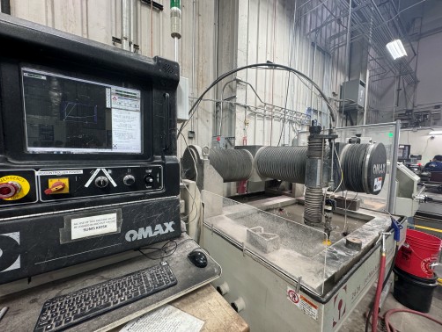
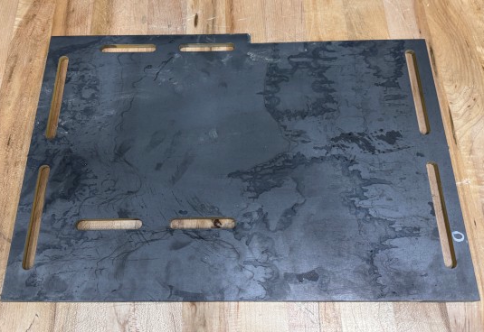

Objective
Design an engine mount to integrate a larger Kohler CH440 engine into the dynamometer test setup, maintaining proper CVT alignment and precise pulley adjustments for accurate testing.
Approach
- Built a weighted evaluation matrix to compare mounting configurations (flat vs. inclined engine orientation) against criteria like pulley distance, manufacturability, stability, and ease of installation, selecting the flat/opposite-side design based on the highest score

- Modeled the mount and engine integration in SolidWorks, iterating on the design to maintain correct CVT-to-engine shaft alignment and support quick engine positioning and attachment


- Fabricated the mount using water jetting, welding, and drill press work


Result
Delivered a mount that enabled comprehensive testing of engine performance, mechanical CVT efficiency, and eCVT battery life under controlled dynamometer conditions, supporting the team's broader electronic CVT development effort.